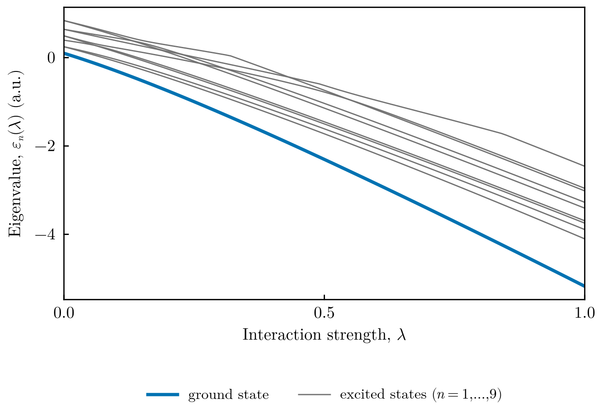
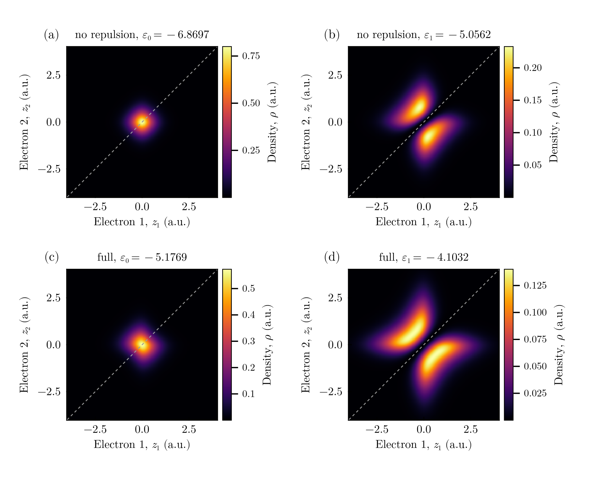

Two electrons: a one-dimensional model of the helium atom
This tutorial uses a two-dimensional mesh for a different purpose: the two coordinates are the positions $z_1$ and $z_2$ of two electrons moving along a line, bound to a nucleus of charge $Z = 2$ fixed at the origin. Because the full two-electron wave function $\Psi(z_1, z_2)$ is computed, electron correlation is included exactly within the model. In atomic units,
\[\hat H = -\frac{1}{2}\left(\frac{\partial^2}{\partial z_1^2}+\frac{\partial^2}{\partial z_2^2}\right) + \lambda\left[v(z_1-z_2;\,1) - v(z_1;\,Z) - v(z_2;\,Z)\right].\]
The effective interaction $v$ results from integrating out a strong harmonic confinement in the two transverse directions. Unlike the bare one-dimensional Coulomb interaction, it is finite at $z = 0$ and behaves as $1/|z|$ at large distances. The factor $\lambda$ switches all interactions on, from free electrons in a box ($\lambda = 0$) to the full model ($\lambda = 1$).
All files are in src/coulomb_interaction_2d_potential/ of the FEMTISE_TUTORIAL repository.
1. The potential
For two charges with product $Q$, transverse confinement length $l$ and Yukawa screening length $l_\alpha$,
\[v(z) = \frac{\pi^{3/2}Q}{2l}\,\exp\!\left(\xi^2+\beta^2\right)\operatorname{erfc}(\xi+\beta), \qquad \xi = \frac{|z|}{l},\quad \beta = \frac{l}{2l_\alpha}.\]
adhoc_potential_function.jl evaluates it without overflow, as $a\,e^{-2\xi\beta}\,h(\xi+\beta)$ with $h(u) = e^{u^2}\operatorname{erfc}(u)$ and the asymptotic form $h(u)\simeq 1/(\sqrt{\pi}\,u)$ for large $u$. It defines two potentials with parameters $(l, l_\alpha, z_{\rm nucleus}, Z, \lambda)$:
# full model: e–e repulsion and attraction of both electrons to the nucleus
function effective_Yukawa_potential_2e(x, params::Tuple)
confinement_length, Yukawa_length, nuclei_coord, atomic_number, switch_factor = params
return switch_factor * (
reduced_confinement_function(x[1], x[2], confinement_length, Yukawa_length, 1.0) -
reduced_confinement_function(x[1], nuclei_coord, confinement_length, Yukawa_length, atomic_number) -
reduced_confinement_function(nuclei_coord, x[2], confinement_length, Yukawa_length, atomic_number))
end
# effective_Yukawa_potential_2e_without_repulsion: the same without the first term2. The input files
Three calculations share the mesh, the square $(-5, 5)^2$ divided into $100\times100$ cells, and the parameters $l = 1$, $l_\alpha = 100$ (practically unscreened), $z_{\rm nucleus} = 0$, $Z = 2$, $\lambda = 1$. The shift sigma = -10 is below all levels, so the 50 lowest eigenpairs are returned.
| File | Potential | Purpose |
|---|---|---|
input_01.dat | effective_Yukawa_potential_2e_without_repulsion | reference without correlation |
input_02.dat | effective_Yukawa_potential_2e | full model at $\lambda = 1$ |
input_03.dat | effective_Yukawa_potential_2e, analysis_param = 5 -0.01 1.0 0.01 | eigenvalues for $\lambda = 0, 0.01, \dots, 1$ |
input_03.dat, for example:
full_path_name = ./output/switch_sweep
dom_type = s
nev = 50
dimension = 2D
sigma = -10.0
adhoc_file_name = ./adhoc_potential_function
potential_function_name = effective_Yukawa_potential_2e
params_potential_types = f f f f f
params_potential = 1.0 100.0 0.0 2 1.0
analysis_param = 5 -0.01 1.0 0.01
output_format_type = jld2 eigen
## ONLY FOR 1D EIGENPROBLEMS
L =
Δx =
## ONLY FOR 2D EIGENPROBLEMS
Lx = 10
Ly = 10
nx = 100
ny = 100
different_masses = false
reduced_density = falseanalysis_param = 5 -0.01 1.0 0.01 sweeps the fifth parameter ($\lambda$). The driver computes the values $\lambda_i + k\,\Delta\lambda$ for $k\ge1$, so starting at $-0.01$ makes the first computed value exactly $\lambda = 0$. The mesh is built once and reused for all 101 values.
3. Running the tutorial
julia --project=. setup.jl # once
julia --project=. src/coulomb_interaction_2d_potential/run_tutorial.jlThe parameter sweep (101 eigenvalue problems with about $4\times10^4$ unknowns each) takes several minutes. Its results are reused on later runs.
_, no_repulsion = simulate("input_01")
_, full = simulate("input_02")
_, sweep = simulate("input_03")
λ = real.(sweep.λvector)
levels = sort(real.(sweep.ϵ_matrix), dims = 1) # ascending order at every λ
save_figure(plot_parameter_sweep(λ, levels; states = 1:10,
parameter_name = "Interaction strength"),
"figures", "helium_model_sweep")4. Results

Switching on the interactions. The ten lowest eigenvalues as functions of $\lambda$. At $\lambda = 0$ the electrons are free in the box, and the levels are small and positive. As the attraction to the nucleus grows, every level decreases, and the ground state separates from the rest. At $\lambda = 1$ it reaches $\varepsilon_0 = -5.1769$. Because the levels are sorted at every $\lambda$, crossings between levels of different symmetry appear as corners in the curves.

Correlation. Two-electron densities $|\Psi(z_1,z_2)|^2$ of the two lowest states, (a, b) without and (c, d) with the electron–electron repulsion. The dashed line is $z_1 = z_2$ (both electrons at the same position).
- Without repulsion, the ground state (a) is a product of one-electron orbitals. Its energy, $-6.8697$, is twice the one-electron energy.
- The repulsion (c) raises the ground-state energy by $1.69$ to $-5.1769$ and deforms the density away from the diagonal. The electrons tend to be on opposite sides of the nucleus.
- The first excited states (b, d) vanish on the diagonal: they are antisymmetric under the exchange $z_1\leftrightarrow z_2$, i.e. spin triplets, while the ground state is symmetric (spin singlet).
5. Going further
- Exchange symmetry. The Dirichlet problem on the square does not impose any exchange symmetry, so singlet and triplet states appear in the same calculation. Classify them by comparing $\Psi(z_1,z_2)$ with $\Psi(z_2,z_1)$.
- Correlation measures. With
reduced_density = truethe driver computes the one-electron densities, from which the Shannon entropies and the mutual information between the electrons follow; see the post-processing guide. - Other systems. Changing $Z$, adding a second nucleus, or giving the two coordinates different masses (
different_masses) turns the same files into models of ions, molecules or electron–nucleus systems.